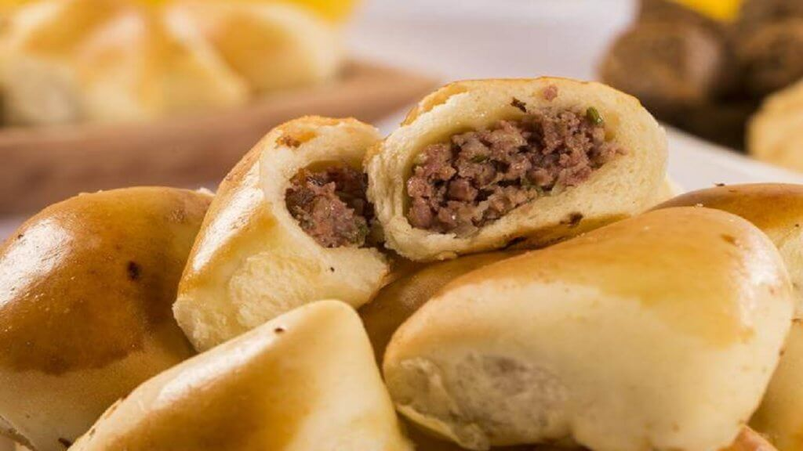

Esfiha

Description
Esfiha is an Arab-Brazilian baked dish
Ingredients
- 600 g farinha de trigo (de preferência Dona Benta)
- 10 g fermento biológico seco instantâneo (fermix ou fleischmann)
- 200 ml leite/água (pode ser usado só água ou leite desnatado para uma receita light)
- 100 ml óleo de canola ou girassol
- 3 colheres de sopa de açúcar
- 1 colher de chá de sal
- 2 ovos